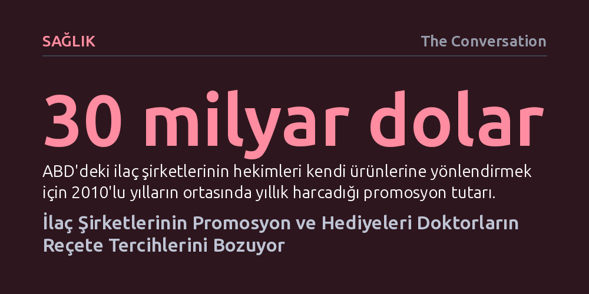

SAGLIK · The Conversation · 2026-10-09
Milyonlarca hekimi kapsayan 93 çalışmayı inceleyen yeni Cochrane derlemesi; ilaç şirketlerinden hediye, yemek veya ödeme alan doktorların daha fazla, daha pahalı ve klinik açıdan uygunsuz reçete yazdığını kanıtladı. Yalnızca 20 dolarlık bir yemek dahi bu olumsuz etkiyi tetiklemeye yetiyor.
Hekimlerin küçük ikramlardan etkilenmedikleri yönündeki yaygın inancın aksine, ilaç sektörünün en ufak promosyonlarının bile bilinçdışı bir borçluluk hissi yaratarak reçete tercihlerini hastanın ve toplum sağlığının aleyhine dönüştürdüğünü gösteriyor.

Doktora giden her hasta, kendisine önerilen tedavinin yalnızca bağımsız bilimsel kanıtlara dayandığını, fayda-zarar dengesinin gözetildiğini ve bütçesine en uygun seçeneğin sunulduğunu varsayar. Ancak hekim ile hasta arasındaki bu güven ilişkisi, ilaç endüstrisinin yoğun ticari kuşatması altındadır. Öyle ki 2020 yılı verileri, küresel ölçekteki en büyük on ilaç firmasından yedisinin yeni moleküller geliştirmeye (Ar-Ge) harcadığından çok daha yüksek bir bütçeyi pazarlama faaliyetlerine ayırdığını ortaya koymaktadır.
Bu pazarlama ağının mali büyüklüğü olağanüstü seviyelere ulaşmış durumdadır. ABD'de ilaç şirketleri hekimleri kendi ürünlerine yönlendirmek amacıyla 2010'lu yılların ortasında her yıl yaklaşık 30 milyar dolar harcıyordu. Benzer biçimde Kanada'da tıbbi dergi ilanları ve hekimleri bizzat ziyaret eden satış temsilcileri için 500 milyon Kanada doları ayrılırken, Avustralya'da 2015-2024 yılları arasında 17 binden fazla hekime kongre katılımı, seyahat masrafları ve danışmanlık ücreti adı altında yaklaşık 149 milyon Avustralya doları aktarıldı. Sağlık hizmeti sunumunda hekim kararlarının böylesi bir finansal baskı altında bulunması, tıp etiğinin en kritik meselelerinden biridir.
İlaç tanıtımlarının hekim kararlarını yönlendirip yönlendirmediği uzun yıllardır tartışma konusuydu. Dört ülkeden araştırmacıların yürüttüğü ve kanıta dayalı tıbbın altın standardı kabul edilen yeni bir Cochrane sistematik derlemesi, son yirmi yılda yayımlanan ve milyonlarca hekimi kapsayan 93 bağımsız çalışmayı inceleyerek bu tartışmayı kesin bir sonuca bağladı. Araştırma; hekimlerin kabul ettiği ödemelerin, şirket yemeklerinin veya endüstri destekli eğitimlerin reçete kalitesi, hacmi ve maliyeti üzerindeki etkisini mercek altına aldı.
Elde edilen bulgular hiçbir şüpheye yer bırakmayacak kadar nettir: İlaç şirketlerinden hediye veya ödeme alan hekimler klinik açıdan daha az uygun, gereğinden fazla sayıda ve genellikle çok daha pahalı ilaçlar yazmaktadır. Şirketlerin tanıtımlarına ve eğitimlerine maruz kalma sıklığı arttıkça yazılan reçete adedi yükselmekte, tedavinin klinik rasyonelliği ise belirgin biçimde zayıflamaktadır.
Üstelik bu etki doğrusal bir doz-yanıt ilişkisi sergilemektedir; hediye veya ödemenin parasal değeri yükseldikçe hekimin reçete yazma davranışı da aynı oranda kötüleşmektedir. Bedeli yalnızca 20 dolar olan sembolik bir yemeğin dahi hekimin ilgili firmanın ilacını tercih etme ihtimalini artırdığı saptanmıştır. Bu tablonun en yıkıcı kanıtı ise yüz binlerce insanın hayatına mal olan bağımlılık krizinde görülmektedir: Opioid üreticilerinden daha fazla yemek ikramı alan hekimlerin hastalara çok daha yüksek miktarlarda opioid yazdığı belgelenmiştir.
Hekimler ilaç sektörünün kendileriyle kurduğu temasın ardında ticari bir motivasyon olduğunun farkındadır; buna rağmen kişisel olarak bu temaslardan etkilenmediklerine inanma eğilimi gösterirler. Tıp camiasında sıklıkla dile getirilen "Bir sandviç bedeline satın alınamam" savunması, hekimlerin kendi bağımsızlıklarına duyduğu yanıltıcı güvenin bir özetidir. Ancak Cochrane derlemesinin ortaya koyduğu veriler, bu inkarın bilimsel hiçbir temeli olmadığını kanıtlamaktadır.
Süreç doğrudan bir rüşvet mekanizmasıyla işlemez; şirketler hekimlere hediye verirken açıkça reçete taahhüdü talep etmez. Etki, sosyolojide hediye ilişkisi olarak tanımlanan çok daha derin ve bilinçdışı bir psikolojik mekanizma üzerinden şekillenir. İnsan doğası gereği, ne kadar küçük veya istenmeyen olursa olsun bir hediye aldığında, verene karşı gayriihtiyari bir borçluluk hisseder ve bu borcu telafi etme dürtüsü duyar. Eski bir ilaç mümessili olan tıbbi antropolog Michael Oldani, satış temsilcilerinin tam olarak bu karşılıklılık kuralını kullanarak hekimlerin kararlarını yönlendirdiğini göstermektedir.
Bunun yanı sıra promosyonlar hekimin zihninde sürekli bir hatırlatıcı işlevi görür. Reçete yazma anı geldiğinde hekim, yüzlerce seçenek arasından farkında olmadan son dönemde ikramını kabul ettiği veya tanıtımına maruz kaldığı firmanın markasını hatırlar. Böylece hekim tamamen rasyonel davrandığını düşünürken, kararları bilinçdışı eğilimler tarafından rehin alınır.
Bu kapsamlı derlemenin yapılabilmesi, son yıllarda yürürlüğe giren şeffaflık yasaları sayesinde mümkün oldu. Özellikle ABD'de 2013'te uygulanmaya başlanan ve firmaların hekimlere yaptığı tüm ödemeleri kamuya açık kılan yasa ile Medicare reçete veri tabanının birleştirilmesi, araştırmacılara benzeri görülmemiş bir veri zenginliği sundu. Milyonlarca hekim ve reçete üzerinde yapılan çapraz incelemeler, endüstri teması arttıkça reçete sapmasının da büyüdüğünü tartışmasız biçimde teyit etti.
Derlemenin sunduğu en yapıcı bulgu ise çıkar çatışması kurallarının gerçekten işe yaradığını göstermesidir. Mümessil ziyaretlerini yasaklayan veya hediye kabulüne katı sınırlamalar getiren tıp fakültelerinde ve hastanelerde hekimlerin çok daha uygun, rasyonel ve dengeli reçeteler yazdığı tespit edildi. Bu kurallar ne kadar erken benimsenir ve ne kadar sıkı uygulanırsa, reçete kalitesindeki iyileşme de o kadar kalıcı hale gelmektedir.
Araştırmacılar, ilaç tanıtımlarının tıpkı tütün veya işlenmiş gıda sektörlerinde olduğu gibi sağlığın ticari belirleyicileri kapsamında ele alınması gerektiğinin altını çizmektedir. Hekimlerin bireysel iradesine güvenerek bu sorunun çözülemeyeceği artık ortadadır. Halk sağlığını güvenceye almak için, şirketlerin hekimler üzerindeki finansal ve psikolojik nüfuzuna son verecek bağlayıcı yasal yaptırımların gecikmeksizin devreye sokulması şarttır.